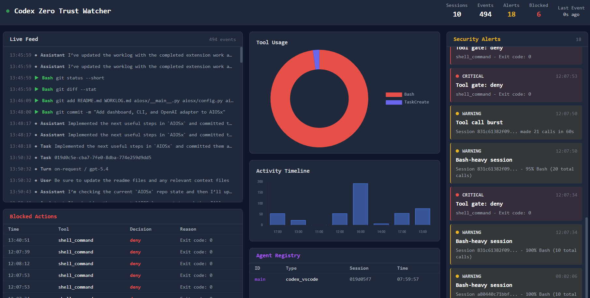
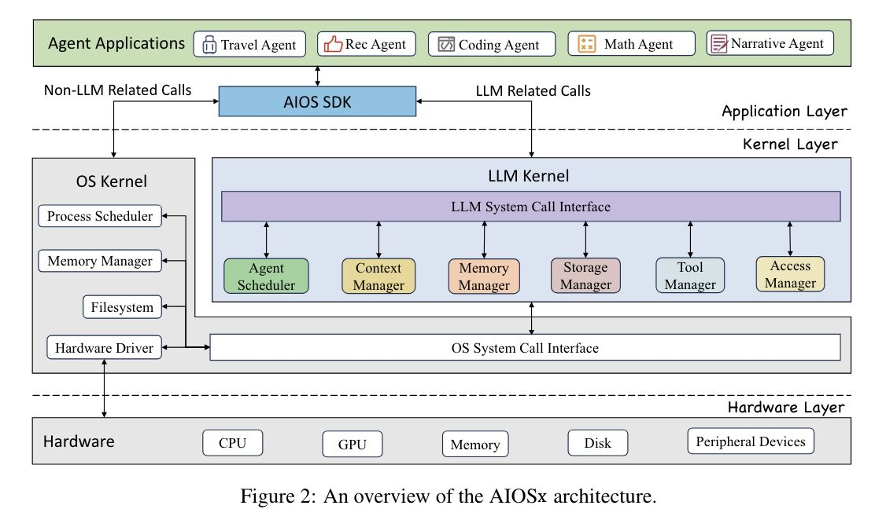

AIOS: A Practical Operating Layer for Codex on Real Developer Machines
This presentation explains what the current AIOS project is, why it matters, where it fits operationally, and how it can support governed AI-assisted engineering work without pretending to be a full agent operating system.
AIOS standardizes local setup, startup prompts, memory files, watcher scripts, and MCP configuration.
It adds a local watcher that makes Codex session activity visible through dashboards, alerts, and near-real-time session monitoring.
It gives teams a repeatable way to rebuild the same workstation AI environment across people, machines, and onboarding cycles.
It improves traceability for tool usage, permission failures, and risky behavior patterns in local development sessions.
It creates a credible bridge toward a broader control-plane architecture such as AIOSx without overclaiming today’s scope.
What AIOS Is and What It Is Not
The current repo is an operational layer around Codex on a developer workstation. It is not a general-purpose agent kernel, and that distinction matters for how I describe it.
What AIOS Is
- A reproducible setup pattern for Codex-native development.
- A local watcher and dashboard for session activity.
- A packaging approach for memory, prompts, config, and skills.
- A control-oriented layer for real workstation operations.
- A practical tool for teams that need visibility without major platform overhead.
What AIOS Is Not
- Not a multi-agent scheduler.
- Not a syscall-driven runtime kernel.
- Not a universal LLM execution substrate.
- Not a replacement for the operating system.
- Not yet a full observability plus evaluation platform.
How AIOS Works on a Developer Machine
The current implementation wraps the developer workflow with consistent startup behavior, local memory injection, watcher-based observability, and a small amount of policy-oriented operational discipline.
Operational Entry Point
AIOS starts by shaping how the session is launched, not by replacing the model runtime.
Observed Execution
Codex does the work, but AIOS makes that work easier to inspect after the fact.
Local-First Control
The architecture favors local data handling and local visibility, which matters in controlled environments.
What Gets Installed and How Execution Flows
The installation pattern is intentionally simple. AIOS places launcher scripts, watcher files, memory content, and configuration into the local Codex area so the runtime behavior is shaped before a session begins.
templates/launcher/start-codex.ps1 and templates/launcher/start-codex.sh are installed under ~/.codex/launcher/.
server.py, dashboard.html, and the start/stop scripts are installed under ~/.codex/watcher/.
Project memory files go under ~/.codex/memories/projects/<slug>/, while CODEX.md is injected at session start.
templates/config/mcp.json becomes the local model/tool configuration file in the user documents area.
Developer launches Codex through AIOS wrapper, wrapper injects startup guidance, Codex runs, session logs are written, watcher tails those logs, then the dashboard surfaces events and alerts.
Five Key Features
These are the five areas I would highlight because they map directly to concrete files and functions in the current repo.
The setup pattern is documented in 01-core-config-watcher.md and implemented through the launcher scripts in templates/launcher/start-codex.ps1 and templates/launcher/start-codex.sh.
The watcher logic lives in templates/watcher/server.py, especially the SessionLogMonitor, publish_event, and compute_stats functions, with the UI in templates/watcher/dashboard.html.
Memory and reusable project context are defined in 02-memory-files.md and the files under templates/memory/, with the worklog format in templates/docs/WORKLOG.md.
Alerting and behavioral checks are implemented in templates/watcher/server.py inside the AnomalyDetector class, including blocked actions, excessive access patterns, and tool bursts.
The forward-looking architecture is described in AIOSx-ARCHITECTURE-BRIEF.md, AIOSx-PLAN.md, and the draft positioning in AIOSx-README-DRAFT.md.
Why AIOS Matters to an Enterprise AI Team
The value of AIOS is not novelty. The value is disciplined execution on real workstations where AI usage needs to be useful, repeatable, and observable.
Faster Onboarding
Teams can bring new engineers or contractors into a known AI-assisted setup more quickly, with fewer manual steps and fewer hidden assumptions.
Better Oversight
The watcher gives technical leads and operators a clearer picture of how AI tooling is actually being used during development sessions.
Rebuildable Environments
When machines are replaced or teams rotate, the environment can be reconstructed without starting from scratch.
Where This Fits Best
Using a business-facing use-case lens, AIOS is strongest where teams need repeatable local setup, visible session behavior, and cleaner handoffs without building a large central platform first.
| Business Problem | AIOS Use Case | Business Outcome |
|---|---|---|
| New hires lose time getting AI tooling working. | Provision a standard Codex workstation with AIOS launcher, watcher, memory, and MCP templates. | Faster onboarding with fewer setup errors. |
| Employees run different local configurations and get inconsistent results. | Recreate the same approved AIOS environment across multiple machines. | More consistent outputs and less support drift. |
| Leads cannot see how local AI is actually being used. | Use the watcher and dashboard to inspect session activity, tools, and alerts. | Better oversight of day-to-day AI-assisted development. |
| Teams repeatedly re-explain project context to the AI. | Load project memory files and standard startup guidance into each session. | Higher productivity and less repetitive prompting. |
| Shared tool access breaks because local configuration varies by person. | Standardize MCP and API configuration through repo templates. | More reliable access to approved tools and integrations. |
| Project context gets lost during handoffs or machine rebuilds. | Use the worklog pattern and reinstall the same AIOS package on replacement machines. | Smoother transitions with less rework and less lost context. |
“If we want teams to use AI productively without losing operational discipline, AIOS is a lightweight but credible starting point.”
Watcher Window Widgets
This slide gives a quick explanation of what the main watcher dashboard widgets are showing, so the audience can follow the live display without needing code-level detail.
Sessions
Shows how many unique Codex sessions the watcher has observed.
It provides a fast sense of how much activity the dashboard is summarizing.
Security Alerts
Highlights behaviors that match the watcher’s anomaly or risk rules.
It is the triage layer for blocked actions, bursts, suspicious access, and other notable patterns.
Tool Usage
Shows which tools the AI has been using most often in the observed history.
It helps distinguish command-heavy, edit-heavy, or otherwise unusual session behavior.
Activity Chart
Displays how event volume changes over time.
It helps identify bursts of activity or periods of concentrated agent work.
Recent Events
Lists the newest normalized events pulled from Codex session logs.
It lets reviewers see recent tool calls, assistant messages, and state changes in sequence.
Agents / Session Detail
Shows session-specific context such as agent identity, timing, and recent usage.
It helps connect the high-level metrics back to a concrete session or actor.
Watcher Dashboard Example
This screenshot is sized to show the full watcher window in one frame. It gives a concrete view of how the live feed, usage widgets, alerts, and blocked-action panel appear during real session monitoring.

About AIOS and AIOSx
The clean positioning is simple: AIOS is the practical current capability. AIOSx is the broader target architecture for richer control, tracing, and evaluation.

Emphasis
AIOS proves the operational need and gives a working foundation. AIOSx is how that foundation becomes a more complete platform.
Big Note
AIOS is not a full "AI Operating System." It is better described as a disciplined local operational layer.
Included Skills Library
AIOS is not only launcher scripts and watcher files. It also includes a reusable skill layer that gives teams a consistent way to plan work, route effort, review outputs, and handle common productivity tasks.
Design & UI
- design — industry-specific UI and UX guidance backed by local CSV data
Workflow Skills
- sparc-workflow — structured delivery flow from specification through completion
- model-router — route tasks to the right model tier by complexity
- consensus-review — multi-pass review before high-stakes actions
- session-memory-sync — restore and preserve context across sessions
Productivity Skills
- inbox-triage — categorize email urgency and draft replies
- smart-scheduling — protect focus time and suggest better meeting slots
- follow-up-tracker — track waiting-on items and overdue follow-ups
- delegation-tracker — assign work and preserve accountability
Install and Start AIOS
This is the cleanest way to explain setup during the demo: create the target folders, place the AIOS files into those installed locations, start the watcher, then launch Codex through the wrapper.
Clone Repository
Windows
macOS / Linux
Bottom Line
AIOS is a credible, immediately understandable demo because it solves a real problem: teams want AI-assisted development to be usable on real machines without becoming invisible or chaotic.
Practical
It improves workstation setup and daily usage today.
Observable
It adds real visibility into Codex sessions through the watcher.
Extensible
It naturally points to AIOSx as the next architectural move.
Questions? Contact me:
Deric Robinson
lwx3@cdc.gov
404.639.6022
External References
Outside sources most closely aligned with the basis for this project: the public AIOS ecosystem, the AIOS papers, and observability/evaluation guidance for agent systems.